Computadoras, laptops, cámaras de vigilancia y redes
Desde daños físicos en la pantalla o en el teclado hasta problemas de conectividad y fallos en hardware, estoy aquí para ayudarte a resolver cualquier problema que pueda haber surgido en tus dispositivos. Me aseguro de proporcionarte soluciones efectivas para garantizar que tus dispositivos estén funcionando de manera óptima y que tus datos estén seguros.
Limpieza física y el mantenimiento de hardware hasta la eliminación de virus y malware y la actualización de software, estoy aquí para mantener tus dispositivos en las mejores condiciones posibles. Como experto en tecnología, estoy equipado para proporcionarte un mantenimiento preventivo regular que ayudará a prolongar la vida útil de tus dispositivos y evitar cualquier problema de software o hardware.
Servicio de soporte remoto está diseñado para brindarte una solución rápida y efectiva a cualquier problema que puedas tener con tus dispositivos.
Solucionar problemas de conectividad hasta errores de software y problemas de rendimiento, estoy aquí para ayudarte a resolver cualquier problema que puedas tener con tus dispositivos. A través de conexiones seguras y encriptadas, puedo acceder a tu equipo y resolver cualquier problema de manera rápida y eficiente.
Te apoyo en la selección de hardware y software hasta la solución de problemas de rendimiento y la eliminación de virus y malware, estoy aquí para ayudarte en todo lo que necesites. Me aseguro de proporcionarte las mejores recomendaciones de hardware y software para satisfacer tus necesidades específicas y maximizar el rendimiento de tu equipo.
Me aseguro de que tus cámaras estén conectadas a una red segura y confiable.
Mi servicio de configuración de cámaras de vigilancia es la solución perfecta para quienes desean mantener un ojo en sus propiedades las 24 horas del día. Me encargo de configurar y optimizar tus cámaras para que estén completamente adaptadas a tus necesidades y te proporcionen la mejor calidad de imagen posible.

Me encargo de configurar tu red para que esté adaptada a tus necesidades específicas y para que puedas disfrutar de una conexión rápida y confiable. Desde la configuración de routers y switches hasta la creación de redes de área amplia (WAN) y redes de área local (LAN), me aseguro de que tu red esté completamente optimizada para garantizar que todos los dispositivos estén conectados y funcionen sin interrupciones.